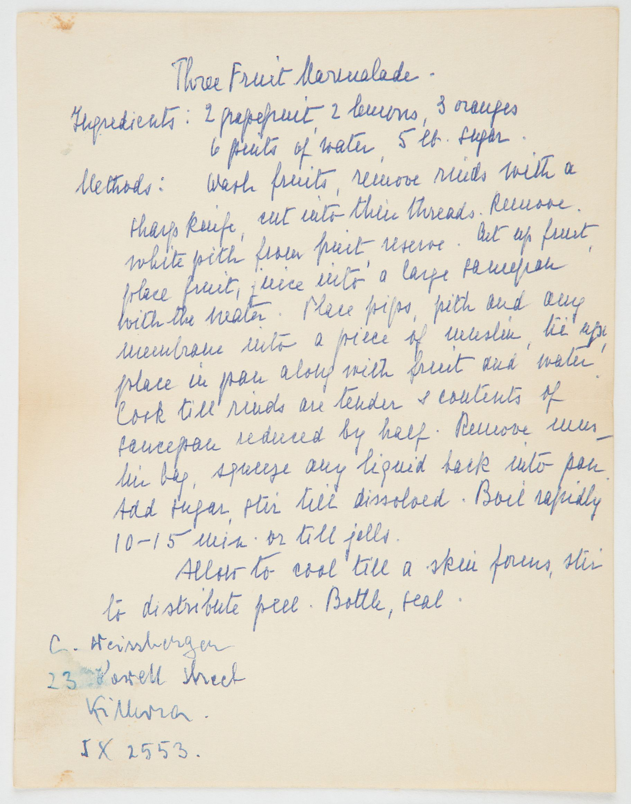

C. Steinberger — 23 Powell Street, Killara

Marmalade as we know it — bitter orange preserve with shredded peel — is usually traced to Dundee, Scotland, where in the 1790s Janet Keiller is said to have turned a cheap shipment of Seville oranges into the first commercial jars. The name itself is older and originally Portuguese (marmelada, a quince paste), but the Scots are the ones who fixed it to citrus and made it a breakfast staple across the British Empire. By the early 20th century marmalade-making was a household ritual in Britain, Ireland, Australia, and New Zealand during the short winter window when Seville oranges were in season.
A "three fruit" marmalade — grapefruit, lemon, and orange together — is the milder, mid-century variant, popular once year-round citrus became available and the bitter Seville monopoly broke. The address on this card (23 Powell Street, Killara) is a giveaway: Killara is a suburb of Sydney, Australia, and this is almost certainly an Australian home recipe from the mid-twentieth century. The muslin bag of pith and pips is the traditional pectin trick — citrus seeds and white pith are pectin-rich, and tying them up lets you extract the gelling power without leaving anything chewy in the final jar.